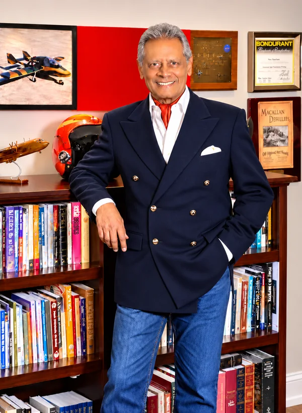

Nila Sagadevan has never been particularly good at following a conventional career path. Fortunately, that has proved to be one of his greatest assets.
An aeronautical engineer by education, a commercial pilot by training, and a communicator by inclination, he has spent more than five decades pursuing an unlikely assortment of professions across more than forty countries. He has designed and test-flown aircraft, negotiated multimillion-dollar contracts, built international markets, trained sales organizations, appeared in American national television commercials, hosted syndicated radio programs, and written award-winning essays and books.
Not necessarily in that order.
The common thread? People. What motivates them, what frightens them, what persuades them—and why even the most intelligent among us sometimes behave in spectacularly irrational ways.
The Long Way Round
After earning a degree in aeronautical engineering at the University of Edinburgh and qualifying as a commercial pilot, Nila emigrated to the United States in 1972, determined to fulfill a boyhood dream of becoming an Arctic aviator. Shortly after arriving in New York, an enterprising pickpocket relieved him of nearly all his money, leaving him with five dollars and a minor logistical problem: how to reach Alaska. His solution? Hitchhike across America to the West Coast and find passage north by sea. A few months later, he drove a Land Rover solo from Rosarito, Mexico, to Fairbanks, Alaska.
Alaska became home for the next fifteen years. He flew commercial transport aircraft in some of the world’s most unforgiving weather, almost exclusively north of the Arctic Circle, where judgment, discipline, and calm under pressure were not merely desirable personality traits—they were survival skills.
Then, discovering that Caterpillar mechanics on the North Slope earned considerably more than pilots, he did the only sensible thing: he became one. Within months, he was promoted to foreman, then supervisor, and within three years, Director of Service for the largest earthmoving company on the Slope, responsible for some 1,500 pieces of heavy equipment. Another education in leadership and human performance—this time with considerably larger engines.
Trading Wings for Words
Nila then exchanged the Arctic for the equally unpredictable world of international business. In aerospace marketing, he introduced American-built aircraft to emerging markets, staging live demonstrations and negotiating with executives and government officials across formidable cultural and linguistic divides.
Those years in international sales and business development eventually led to his appointment as Vice President of Sales for an American aerospace and defense component manufacturer. There, he trained, motivated, and directed a nationwide network of more than 200 sales professionals working through independent manufacturers’ representative firms. Within two years, the company’s gross sales had more than doubled. Later, in telecommunications, he earned a coveted Top Gun award for outstanding sales performance within a company operating across five continents.
Increasingly, though, what fascinated him was not the product but the people: the links between motivation and performance, confidence and competence, persuasion and trust. That fascination became Omnicom Corporate Communications.
Meanwhile, in Front of a Camera…
As if all that weren’t enough, Nila joined the Screen Actors Guild in 1989, appeared in national television commercials for Nasdaq and Travelodge, and voiced narrations for clients ranging from BMW to the International Red Cross. He also produced and hosted The Open Mind, a syndicated radio program exploring declassified government documents on unexplained aerial phenomena reported by military pilots and astronauts. Two decades later came Beyond With Nila, an interview-based program featuring an eclectic cast of guests exploring subjects ranging from the mysteries of human consciousness to the more perplexing questions of science, history, and the human condition.
For someone trained in airflow over wings, quite a departure. Or perhaps not. Both aviation and communication demand a keen understanding of what happens when things don’t behave as expected.
The Written Word
His essay Melanin Won’t Melt, a reflection on racism in America, won first prize in the Drexel National Essay Competition. His first book, Warpaint of the Gods, on belief and religious intolerance, led to an invitation to address a United Nations conference in Prague. His approach to writing, as to most things: question assumptions, and never confuse widespread agreement with demonstrable truth.
Experience Speaks.
Today, Nila brings this unusual accumulation of experience to corporate training, executive presentations, and human performance development. He believes that competence cannot be manufactured through slogans, that confidence must be earned through action, and that lasting motivation begins with an individual’s own desire to improve. So rather than textbook theory, he offers lessons learned in demanding, sometimes hazardous, and frequently unpredictable places.
A few good stories and a healthy dose of irreverent humor are virtually guaranteed. But the real objective is to leave people thinking differently about themselves, their colleagues, and what they might be capable of achieving.
After more than six decades abroad, Nila has returned to Sri Lanka, the country of his birth—not to embark on yet another career, but to share the lessons of several.
He has, after all, accumulated rather a lot of them.